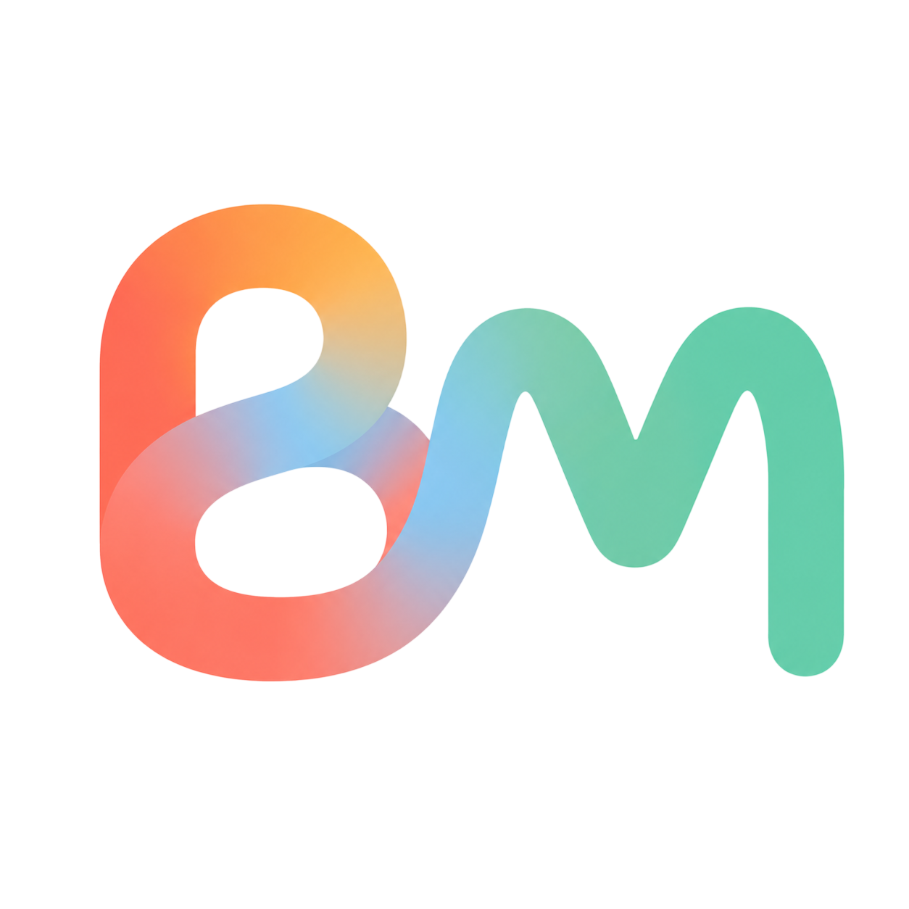
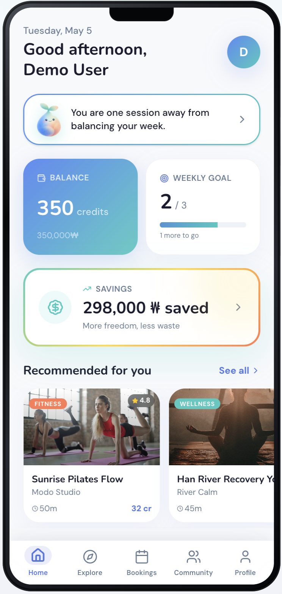
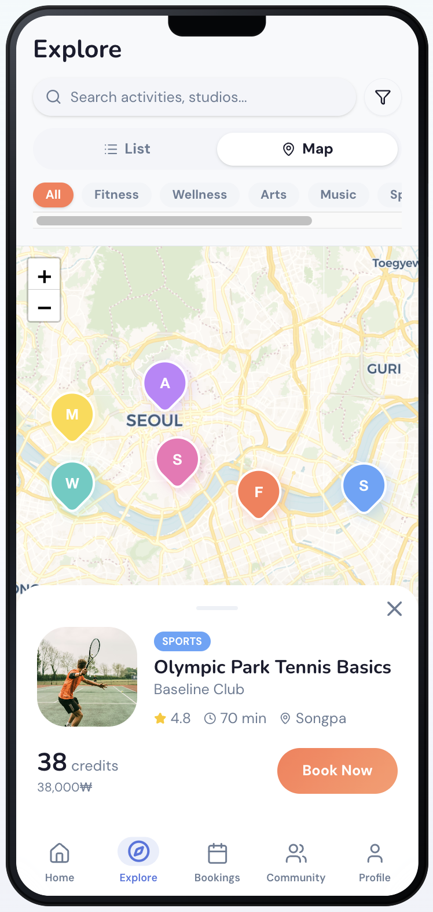
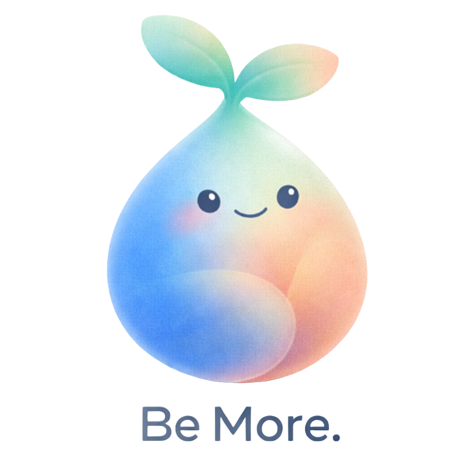
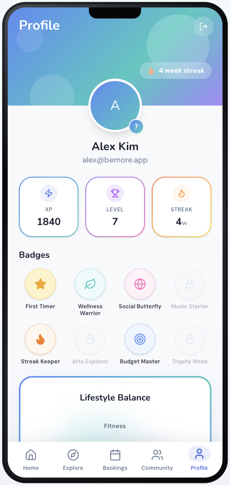
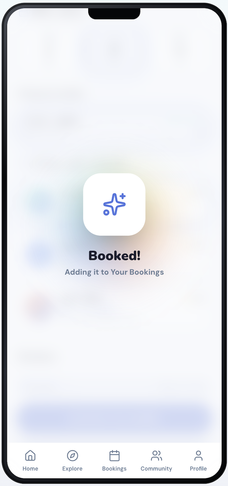
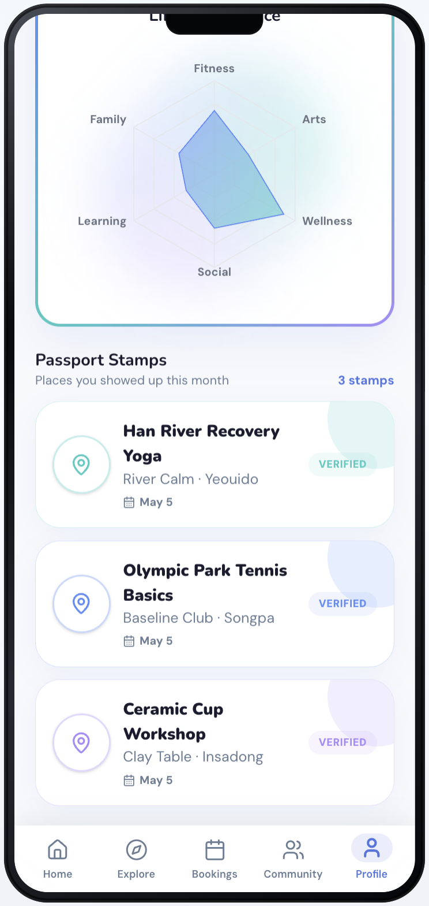
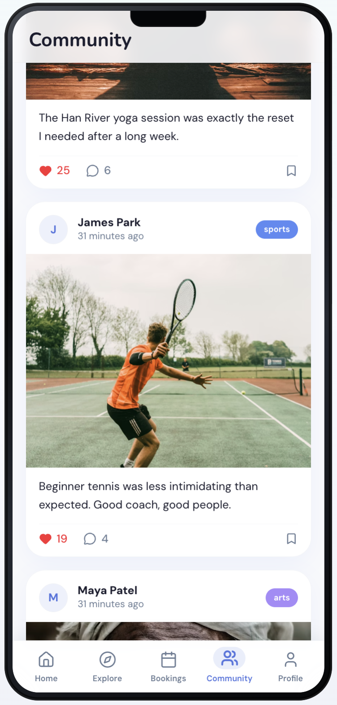

Financial friction
Capital is locked into expensive multi-month contracts, even when users stop attending.

BeMore RoadmapKAIST GESS 2026 venture concept
One app. One wallet. Every lifestyle.
A lifestyle continuity platform that helps people discover, afford, plan, and sustain meaningful routines through flexible credits, AI guidance, social accountability, and one multi-location marketplace.



Traditional fitness and hobby businesses rely on breakage: upfront payments, fixed schedules, one-venue contracts, and cancellation friction. When life changes, users lose both the activity and the money attached to it.
Capital is locked into expensive multi-month contracts, even when users stop attending.
Modern weeks move constantly, but legacy memberships expect fixed times and places.
When a plan collapses, finding a nearby alternative takes too much energy.
Ever paid for a class, stopped going when life got busy, and just felt guilty?
Waste chances No More. Be More.BeMore bridges users who want more choice with venues that have perishable empty time slots. Users keep a universal wallet. Partners gain demand where capacity is underused.
Credits start at ₩50,000, never expire, and work across yoga, sports, arts, music, and recovery.
Book Pilates on Tuesday, pottery on Wednesday, and a guitar lesson near work on Thursday.
Recommendations adapt to mood, schedule, location, budget, availability, and lifestyle balance.
Badges, soft streaks, maps, and social feed rewards keep users returning without pressure or guilt.
The prototype shows the full loop: wallet balance, AI prompts, marketplace discovery, map booking, purchase flow, achievement feedback, passport stamps, and social motivation.
Finance system + purchase
Users buy flexible packages and spend them anywhere in the marketplace, reducing the pain of paying class-by-class.





Partners can list off-peak classes, update availability, manage customers, and track payouts through a dashboard that replaces manual booking threads and fragmented admin work.
User testing, expert review, partner interviews, and survey data shaped the design. Interviewees described the credit system as a freedom mechanism, and business owners highlighted the need for schedule matching plus a dashboard.
The model combines user credit packages, commission on activity transactions, partner SaaS subscriptions, featured listings, and corporate wellness programs.
20 credits for beginners exploring new venues.
50 credits for regular use and better value.
80 credits for maximum savings and continuous usage.
Seoul and major cities, 10k users, 100-300 partner venues, free starter credits.
100k active users, arts and niche sports, family bundles, referral loops.
300k active users, corporate wellness partnerships, proprietary recommendation engine.
International partners, U.S. launch path, enterprise partnerships, 500k+ target users.
Vision, partner validation, user-centered ecosystem design.
Regional operations, problem metrics, logistics execution.
Prototype development, gamification, AI curation mechanics.
Market placement, acquisition loops, localized growth.
TAM/SAM/SOM modeling, P&L pipeline, credit monetization.
Leaving breaks soft streaks, cashback, reward tiers, passport progress, and the multi-activity social ecosystem.
Dense cities, high mobile adoption, and contract-cancellation pain make Korea a strong validation market before U.S. enterprise licensing.
Credits enable dynamic pricing, separate leisure budgeting, and reduce moment-of-use payment friction.
These are the source categories and links cited in the BeMore appendix: problem research, market sizing, leisure behavior, AI retention, cashback loyalty, gamification, social features, Korean market entry, and pricing comparison.
Use this section as the public-facing evidence shelf behind the pitch.